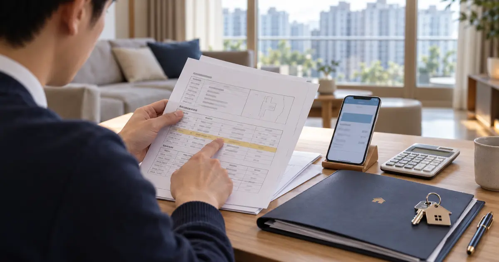
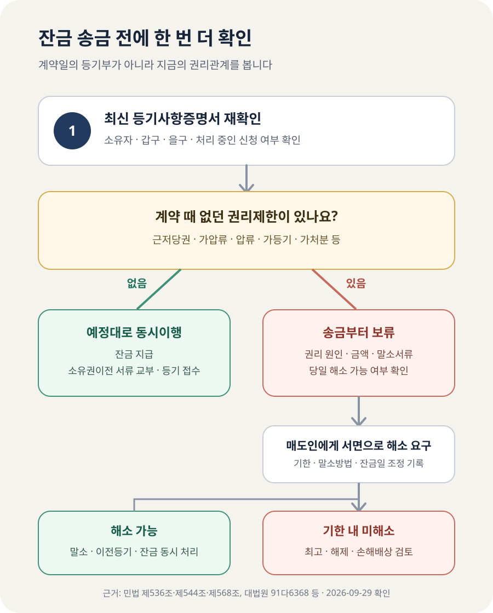

아파트 잔금 전에 새 근저당·가압류가 생기면 잔금을 줘야 할까?

계약 당시 없던 근저당권·가압류·압류·가등기 같은 권리제한이 잔금 전에 확인됐다면 매도인에게 바로 잔금을 보내지 말고, 먼저 말소와 소유권이전이 가능한지 확인해야 합니다. 민법상 매수인의 잔금 지급과 매도인의 소유권이전은 특별한 약정이 없으면 동시에 이행하는 관계이고, 대법원은 매도인이 원칙적으로 제한이나 부담이 없는 완전한 소유권을 넘겨야 한다고 봅니다. 다만 새 등기가 보였다고 계약이 그 자리에서 자동 해제되는 것은 아닙니다. 잔금 지급을 보류하고 서면으로 해소를 요구한 뒤, 말소가 되지 않을 때 계약서와 민법에 따른 해제·손해배상 절차를 검토해야 합니다.
계약할 때 본 등기부만 믿으면 왜 부족할까요?
매매계약과 잔금 사이에는 보통 몇 주에서 몇 달의 간격이 있습니다. 그동안 소유자가 추가 대출을 받아 근저당권을 설정할 수도 있고, 채권자가 가압류·압류를 신청할 수도 있습니다. 계약일의 등기사항증명서는 그날까지 기록된 권리관계를 보여 줄 뿐, 잔금일까지의 상태를 보장하는 문서가 아닙니다.
그래서 잔금일에는 매도인 이름이 그대로인지, 갑구에 새 압류·가압류·가처분·가등기가 없는지, 을구에 새 근저당권·전세권이 없는지 다시 확인해야 합니다. 온라인 열람 화면을 오래 전에 저장해 둔 것으로 대신하지 말고 송금과 소유권이전 접수에 최대한 가까운 시점의 증명서를 확인하세요. 등기 신청이 처리 중이거나 내용이 불명확하면 송금을 서두르지 말고 등기를 맡은 법무사와 권리 상태를 확인해야 합니다.
확인은 잔금일 아침 한 번으로 끝내기보다, 큰 금액을 이체하기 직전과 등기 접수 직후까지 이어가는 편이 안전합니다. 등기부 확인, 기존 대출 상환, 말소서류 수령, 소유권이전 신청, 잔금 지급을 서로 떨어진 일로 처리하면 그 사이에 위험이 생깁니다.
근저당권과 가압류는 같은 문제가 아닙니다
| 등기에서 보이는 항목 | 뜻 | 잔금 전 확인할 것 |
|---|---|---|
| 근저당권 | 현재와 장래의 일정 범위 채무를 담보하는 권리 | 채권최고액만 보지 말고 실제 상환액, 상환 계좌, 말소서류 준비 여부 |
| 가압류 | 채권자가 장래의 강제집행을 위해 재산을 임시로 묶어 둔 상태 | 해제·취소에 필요한 절차와 실제 말소 가능 시점 |
| 압류·경매개시 | 조세 체납 또는 강제집행 절차가 진행되는 상태 | 채권자·기관, 해제금액, 매매 당일 해소 가능 여부 |
| 가등기·가처분 | 제3자의 소유권이전 청구나 처분금지와 관련될 수 있는 권리 | 단순 채무 상환만으로 말소되는지, 권리자의 협조가 필요한지 |
기존 근저당권이 있다는 이유만으로 모든 계약이 위험한 것은 아닙니다. 매도인의 주택담보대출을 매수인의 잔금으로 상환하고, 은행에서 말소서류를 받아 소유권이전등기와 함께 접수하는 거래도 있습니다. 문제는 그 절차와 금액을 확인하지 않은 채 매도인 개인 계좌로 잔금 전액을 먼저 보내는 경우입니다.
가압류나 가등기는 은행 대출처럼 잔금 일부를 상환한다고 바로 없어지는 구조가 아닐 수 있습니다. 상대 채권자 또는 권리자의 동의, 법원의 결정이나 별도 서류가 필요할 수 있으므로 “잔금 받으면 곧 지우겠다”는 말만으로 처리하면 안 됩니다.
매수인이 잔금 지급을 멈출 수 있는 근거가 있나요?
민법 제568조는 매도인의 권리이전 의무와 매수인의 대금 지급 의무가 특별한 약정이나 관습이 없으면 동시에 이행되는 관계라고 정합니다. 민법 제536조는 상대방이 채무이행을 제공할 때까지 자기 채무의 이행을 거절할 수 있도록 합니다.
대법원 1991. 9. 10. 선고 91다6368 판결은 부동산 매매에서 매도인이 특별한 사정이 없는 한 제한이나 부담이 없는 완전한 소유권이전등기를 해야 한다고 봤습니다. 지상권이나 가압류가 설정돼 있다면 금액이 작고 쉽게 갚을 수 있다는 사정만으로 충분하지 않고, 이를 말소해 완전한 소유권을 넘겨야 한다는 취지입니다.
또한 대법원 2001다27784·27791 판결은 소유권이전등기청구권에 대한 가압류가 해제되지 않아 완전한 이전등기를 할 수 없는 사안에서, 매수인이 잔대금 지급을 거절할 수 있다고 판단했습니다. 결국 새 권리제한 때문에 계약 내용대로 소유권을 넘겨받기 어렵다면, 매수인은 해소 전까지 잔금 지급을 보류할 근거를 검토할 수 있습니다.
다만 ‘잔금 지급 보류’와 ‘계약 해제’는 다릅니다. 권리제한이 보였다는 이유만으로 계약금을 곧바로 돌려받거나 배액배상을 받는 것은 아닙니다. 계약서의 특약, 매도인의 말소 준비, 실제 이행 가능성, 통지와 최고 과정을 따로 봐야 합니다.

기존 근저당을 잔금으로 갚는다면 무엇을 확인해야 할까요?
계약할 때부터 등기부에 있던 매도인의 근저당권을 잔금으로 상환하기로 했다면, 새로 생긴 근저당권과는 구분해야 합니다. 이 경우 핵심은 채권최고액이 아니라 잔금일 현재 금융기관이 확인한 실제 상환 필요액과 말소서류입니다. 채권최고액은 담보하는 한도를 표시하므로 실제 대출잔액과 같다고 단정할 수 없습니다.
- 상환금액을 금융기관 자료로 확인합니다. 매도인이 말한 잔액만 듣지 말고 잔금일 상환 필요액과 계좌를 확인합니다.
- 돈이 어디로 가는지 정합니다. 상환에 쓸 잔금 부분은 매도인에게 먼저 보내기보다 금융기관 상환과 연결되는 방식을 중개사·법무사와 정합니다.
- 말소서류 수령을 확인합니다. 상환 완료만으로 등기부에서 자동 삭제되는 것은 아니므로 말소등기 신청에 필요한 서류가 준비되는지 확인합니다.
- 말소와 이전을 같은 흐름에서 접수합니다. 기존 담보 말소, 매수인 앞으로의 소유권이전, 매수인 대출의 새 근저당 설정이 있다면 접수 순서를 법무사와 확인합니다.
- 접수증과 후속 등기부를 확인합니다. 접수했다는 말로 끝내지 말고 신청 내용과 완료 후 등기사항증명서를 확인합니다.
말소 비용을 누가 부담하는지, 여러 근저당 중 일부만 말소하는지, 매도인 대출이 잔금보다 많은지는 계약 전 확인해야 합니다. 잔금으로 모두 갚을 수 없다면 매도인이 부족액을 어떻게 준비하는지까지 확인해야 거래 구조가 완성됩니다.
잔금 당일 새 근저당이나 가압류를 발견했다면
- 이체를 중단합니다. 예약이체나 대출 실행이 예정돼 있다면 은행·법무사·중개사에게 즉시 상황을 알립니다.
- 최신 등기사항증명서를 보관합니다. 계약 때 확인한 등기부와 새 등기부, 발급 시각을 함께 남깁니다.
- 권리의 원인과 말소 가능성을 확인합니다. 접수일, 권리자, 채권최고액 또는 청구금액, 말소에 필요한 금액·서류·시간을 확인합니다.
- 매도인에게 서면으로 해소를 요구합니다. 무엇을 언제까지 말소할지, 잔금일을 어떻게 조정할지 문자·합의서 등으로 명확히 남깁니다.
- 해소와 이전이 확실하면 동시 처리를 설계합니다. 말소대금 직접 상환, 말소서류 교부, 등기 접수와 잔금 지급의 순서를 법무사·금융기관과 맞춥니다.
- 해소되지 않으면 해제 절차를 검토합니다. 일방적으로 계약 종료를 선언하기 전에 계약서의 해제·위약금 조항과 최고 필요 여부를 확인합니다.
민법 제544조는 한쪽이 채무를 이행하지 않으면 상대방이 상당한 기간을 정해 이행을 요구하고, 그 기간에도 이행하지 않을 때 계약을 해제할 수 있도록 합니다. 다만 상대방이 미리 이행하지 않겠다는 의사를 표시한 경우 등에는 별도 판단이 필요합니다. 실제 해제 통지는 금액이 크고 되돌리기 어려우므로 계약서 원문과 등기부를 가지고 법률 전문가에게 확인하는 편이 안전합니다.
9억원 아파트 잔금일에 등기부가 달라진 사례
매매가 9억원, 계약금 9천만원, 잔금 8억1천만원인 아파트를 가정해 보겠습니다. 계약 당시 을구에는 은행 근저당권 하나가 있었고, 매도인은 잔금 중 3억원으로 대출을 상환해 말소하기로 했습니다. 그런데 잔금일 아침 새 등기부를 보니 계약 뒤 설정된 채권최고액 1억2천만원의 다른 근저당권이 하나 더 생겼습니다.
이때 “잔금이 8억1천만원이니 두 대출을 모두 갚고도 돈이 남는다”는 계산만으로 송금하면 안 됩니다. 먼저 두 금융기관의 당일 실제 상환액을 각각 확인하고, 잔금에서 상환할 금액을 어느 계좌로 보낼지, 각 은행이 말소서류를 당일 내줄 수 있는지 확인해야 합니다. 매도인이 세금·다른 채무 때문에 추가 상환자금을 마련해야 한다면 그 돈이 실제 준비됐는지도 봐야 합니다.
같은 1억2천만원이라도 새 등기가 가압류라면 절차가 달라집니다. 가압류 채권자에게 돈을 보내기만 하면 자동 말소된다고 단정할 수 없고, 해제 신청과 필요한 서류가 준비돼 있는지 확인해야 합니다. 당일 해소가 불가능하다면 잔금일을 연장하고 언제까지 무엇을 완료할지 합의서에 적는 것이 우선입니다. 매도인이 “일단 잔금을 주면 며칠 뒤 처리하겠다”고만 한다면, 매수인은 소유권을 제한 없이 넘겨받는다는 확인 없이 큰돈을 먼저 내주는 위험을 부담하게 됩니다.
최신 등기사항증명서, 계약 당시 등기부, 각 금융기관의 당일 상환금액, 상환 계좌, 말소서류 교부 여부, 법무사의 등기 신청서와 접수 순서, 당사자가 서명한 잔금일 변경·권리말소 합의서를 한 묶음으로 확인하세요.
반대로 모든 금융기관의 상환액과 말소서류가 확인되고, 매수인 명의 소유권이전 신청과 함께 말소 접수가 이뤄지는 구조라면 권리제한이 있었다는 사실만으로 거래를 반드시 중단해야 하는 것은 아닙니다. 중요한 것은 “지울 수 있다”는 말이 아니라, 잔금 지급과 동시에 지워질 수 있도록 금액·서류·접수 순서가 갖춰졌는지입니다.
계약서에는 ‘새 권리 설정 금지’만 적으면 충분할까요?
권리변동 금지 특약은 분쟁 때 계약 당시 합의를 보여 주는 데 도움이 됩니다. 다만 “근저당 설정 금지” 한 줄만 쓰면 가압류·가등기·전세권이나 제3자의 신청, 위반 시 처리방법이 빠질 수 있습니다. 아래 항목을 당사자가 실제 상황에 맞게 합의하는 것이 중요합니다.
- 계약일부터 소유권이전등기 접수 완료 때까지 현재 권리관계를 유지할 것
- 새 근저당권·전세권·가등기·가압류·압류·가처분 등 소유권 취득을 방해할 권리를 설정하거나 발생시키지 않을 것
- 기존 근저당권의 상환금액, 상환 방법, 말소 시점과 비용 부담
- 새 권리제한 발견 시 잔금 지급을 보류하고 매도인이 정한 기한까지 해소할 것
- 기한 내 해소되지 않을 때 잔금일 연장, 계약 해제, 지급금 반환과 손해배상을 어떻게 처리할 것
특약은 위험한 권리를 없애 주는 장치가 아니라, 문제가 생겼을 때 책임과 처리 순서를 분명히 하는 약속입니다. 이미 압류가 많거나 말소자금이 부족한 물건을 문구 하나로 안전하게 만들 수는 없습니다. 권리관계가 복잡하면 계약 체결 전 등기 전문가나 변호사의 검토가 우선입니다.
자주 묻는 질문
계약 당시부터 있던 근저당권도 모두 말소될 때까지 잔금을 주면 안 되나요?
계약에서 잔금으로 기존 대출을 상환하고 말소하기로 한 경우에는 상환·말소·이전등기를 같은 자리에서 진행할 수 있습니다. 먼저 잔금 전액을 매도인에게 보내는 방식과는 다릅니다. 실제 상환액과 금융기관 계좌, 말소서류, 등기 접수 순서를 확인하세요.
새 근저당권 금액이 작으면 그냥 잔금을 줘도 되나요?
금액이 작다는 이유만으로 무시할 수 없습니다. 대법원도 제한이나 부담이 없는 완전한 소유권 이전을 원칙으로 봅니다. 잔금과 동시에 확실히 말소할 수 있는지 확인하고, 확인되지 않으면 지급을 보류하는 쪽이 안전합니다.
매도인이 오늘 바로 말소 접수하겠다고 하면 믿어도 될까요?
접수 가능 여부와 필요한 서류를 법무사·권리자 측 자료로 확인해야 합니다. 특히 가압류·가등기는 매도인의 말만으로 바로 말소되지 않을 수 있습니다. 접수번호와 신청 내용을 확인하고 잔금 지급 조건을 서면으로 남기세요.
이미 잔금을 보낸 뒤 새 가압류를 알게 됐다면 어떻게 하나요?
최신 등기부, 계약서, 송금내역과 등기 접수기록을 확보하고 매도인에게 즉시 서면 통지하세요. 소유권이전 접수 전후와 각 등기의 접수 순서에 따라 대응이 달라질 수 있으므로 법무사와 변호사에게 곧바로 확인해야 합니다.
공식 자료
- 국가법령정보센터 — 민법 제536조(동시이행의 항변권)
- 국가법령정보센터 — 민법 제544조(이행지체와 해제)
- 국가법령정보센터 — 민법 제568조(매매의 효력)
- 대법원 1991. 9. 10. 선고 91다6368 판결 — 제한 없는 소유권이전의무
- 대법원 2001다27784·27791 판결 — 가압류 해제와 잔대금 지급
- 대법원 인터넷등기소 — 부동산 등기사항증명서 열람·발급
정보 기준일: 2026-09-29. 이 글은 일반적인 주택 매매에서 잔금 전 권리변동을 발견했을 때의 확인 순서를 설명합니다. 잔금 지급 거절, 계약 해제와 손해배상 가능성은 계약서, 등기 접수 순서, 권리의 종류, 매도인의 이행 제공 등 개별 사정에 따라 달라집니다. 실제 송금이나 해제 통지 전에는 계약서와 최신 등기부를 가지고 법률 전문가에게 확인하세요.
잔금 전에 금액과 권리를 함께 확인하세요
- 잔금일 정산 계산기잔금·관리비·세금 정산액 확인
- 등기부등본에서 먼저 확인할 항목갑구·을구와 채권최고액 읽는 법